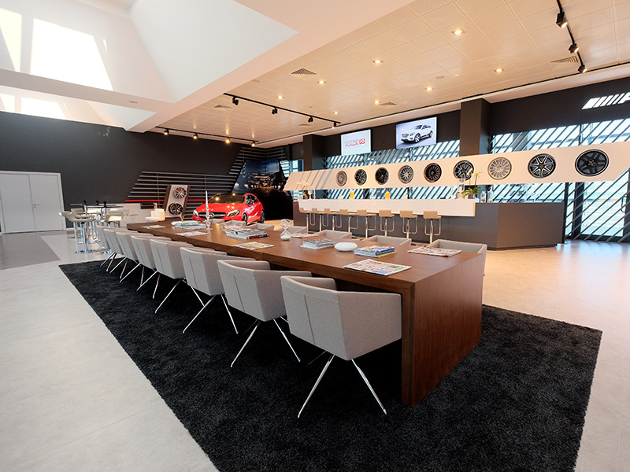

Uluslararası yayın
Office Snapshots
30 Temmuz 2024
Mercedes-Benz İstanbul Ofisi
Mercedes-Benz İstanbul ofisi, dünyanın en çok izlenen ofis tasarımı yayınlarından Office Snapshots’ta yayımlandı.

Basında Boytorun
Mercedes-Benz İstanbul ofisi, uluslararası işyeri tasarımı yayınlarında.
Mercedes-Benz
Profiller

İletişim
Proje türü, yaklaşık alan ve şehir yeterli; gerisini birlikte netleştiririz.
Çerezler. Yalnızca gerekli çerezler kullanılır. Ayrıntılar